Vallées de l'Aude
Versants ravinés
Photos des Archives photographiques de la direction des forêts et du service de Restauration des Terrains en Montagne (RTM) dans le département de L'AUDE (1886-1905) (Ministère de l'Agriculture)
Vallée de la Boulzane
Salvezines
Vue d'ensemble de ravinements sur le versant ouest de la montagne de Roc Long, sur la rive droite de la Boulzane dans la direction de Salvezines, terrains nus ou à peu près, dévastés par les troupeaux de chèvres (TRANTOUL, 1899).
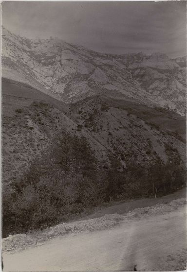
Vue d'ensemble de ravinements sur le versant ouest de la montagne de Roc Long sur la rive droite de la Boulzane dans la direction de Gincla, terrains très dégradés, nus ou à peu près, dévastés par les troupeaux de chèvres. (TRANTOUL, 3 ex., 1899).
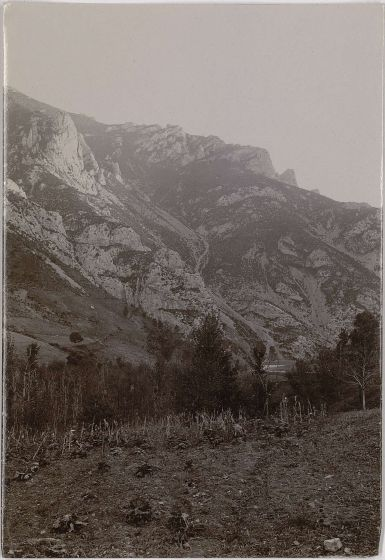
Vue de la vallée de la Boulzane à la sortie de Salvezines d'une station située près de la scierie de M. TRUILLET dans la direction du nord et suivant l'axe de la vallée, terrains ruinés d'un côté de la vallée comme de l'autre, sol nu ou à peu près, continuellement dévastés par les troupeaux de chèvres (TRANTOUL, 2 ex., 1899).
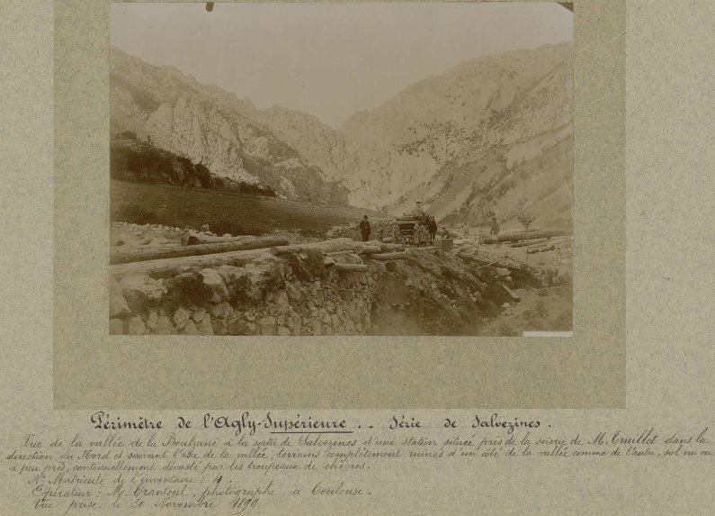
Vue des gorges dans la vallée de la Boulzane, dans la direction du nord, terrains excessivement ravinés des deux côtés de la vallée, roche dénudée, terrain continuellement dévasté par les troupeaux de chèvres. (TRANTOUL, 3 ex., 1899)
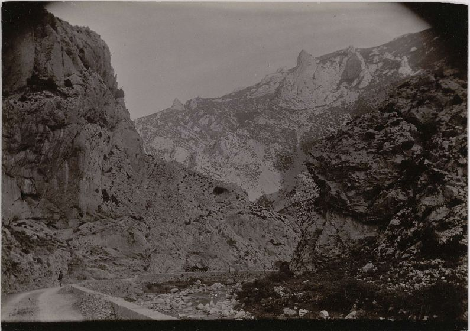
Vue prise d'une station près de la scierie abandonnée de la Folie, du torrent qui limite les communes de Salvezines et de Puilaurens, sur la rive droite de la Boulzane, partie des bâtiments de l'usine de la Folie et canal d'amenée au premier plan. Terrains excessivement ravinés et continuellement dévastés par des troupeaux de chèvres, roche dénudée. (TRANTOUL, 2 ex., 1899)
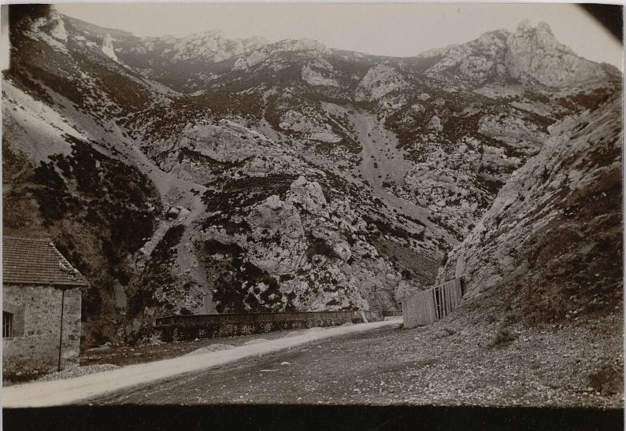
Vue prise sur le bord de la route de Gincla à Puilaurens, après l'usine de la Folie, dans la direction du Sud du torrent qui divise les territoires communaux de Puilaurens et de Salvezines et des ravinements de la rive droite de la Boulzane sur le versant de la montagne d'Ayguesbonnes, terrains excessivement ravinés, continuellement dévastés par le parcours des troupeaux de chèvres, roche dénudée. (TRANTOUL, 2 ex., 1899)
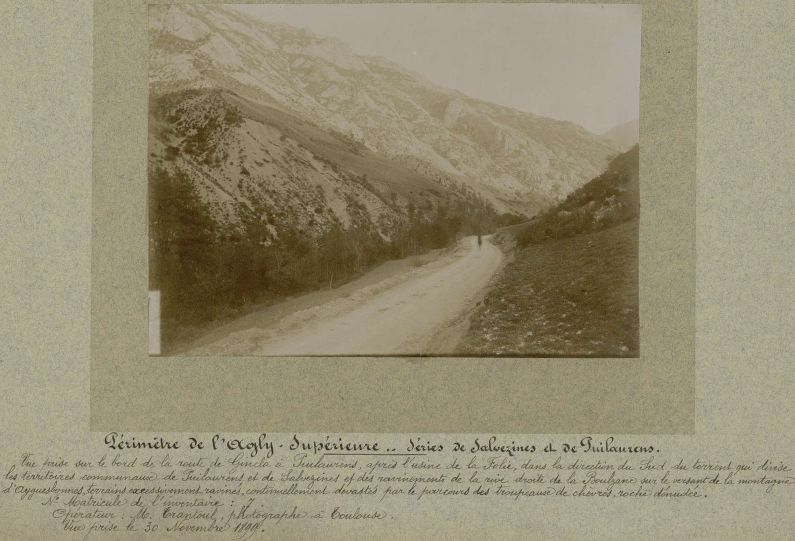
Montfort
Vue d'ensemble des ravinements du Maranet situés sur la rive gauche de la Boulzane, affluent de droite de l'Agly. Terrains nus et extrêmement ravinés dans le haut, en nature de prairie dans le bas, au bord de la Boulzane. (TRANTOUL, 2 ex., 1899)
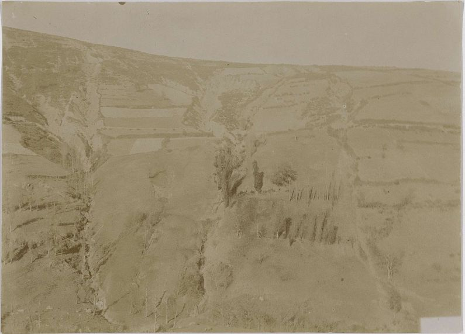
Vallée du Rébenty
La Fajolle
Ravin de la Crémade, sur la rive droite du ruisseau de Fount d'Argent, affluent de gauche du Rébenty, au canton de la Grande Gaoutte, contre la forêt domaniale de Lafajole. Terrains ravinés, nus au pied de la forêt, deux gardes échelonnés sur la berge de gauche. (TRANTOUL, 2 ex., 1899)

Belfort-sur-Rébenty
Vue d'ensemble prise de la route de la vallée du Rébenty, près du moulin de Cazelles, du torrent de la Ratche, affluent de gauche du Rébenty. Terrains profondément ravinés et dégradés. (TRANTOUL, 2 ex., 1899)

Vue de détail prise au-dessus de la berge droite, un peu en amont du cône de déjection, du torrent de la Ratche, affluent de gauche du Rébenty. Le garde TISSEYRE au premier plan, sur un rocher près de la berge de droite. Terrains profondément ravinés et dégradés. (TRANTOUL, 3 ex., 1899)

Vue de détail prise d'une station située sur le cône de déjection du torrent de la Ratche, affluent de gauche du Rébenty, suivant l'axe du torrent. Le garde TISSEYRE au premier plan dans le lit même du torrent. Dans le fond, montagnes plus ou moins ravinées dans les communes de Rodome, Mazuby et Galinagues. Terrains profondément ravinés et dégradés. (TRANTOUL, 2 ex., 1899)

Vallée de l'Aiguette
Le Bousquet
Ravins du Bousquet dans une moraine granitique blanche (ROUSSEAU, 2 ex., 1887)

Vallée de l'Aude
Escouloubre
Ravins du Long menaçant le village. (ROUSSEAU, 2 ex., 1887)
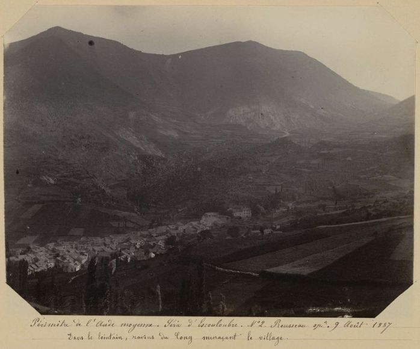
Progrès du ravinement sur un terrain cultivé (ROUSSEAU, 2 ex., 1887)
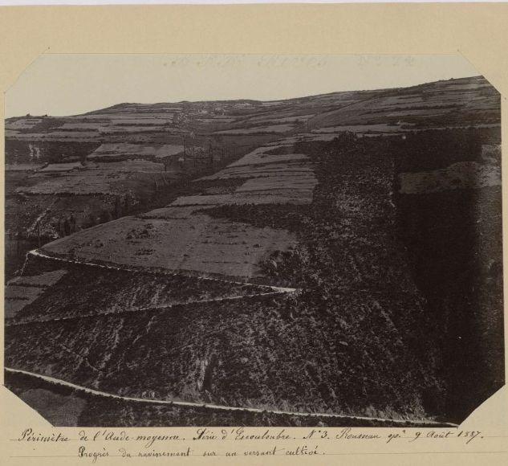
Montagne ravinée de la division de Lacanal, au deuxième plan. (ROUSSEAU, 2 ex., 1887)
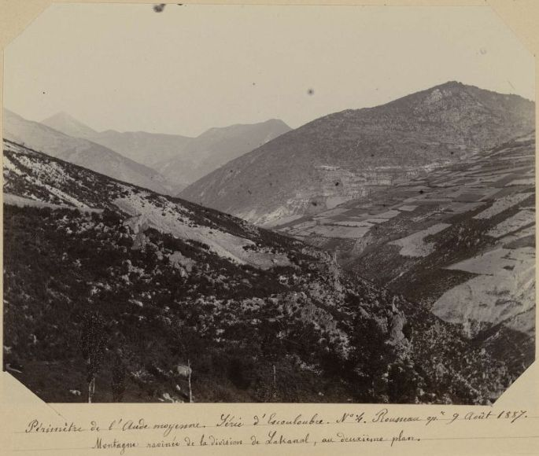
Campagna-de-Sault
Vue prise d'une station située sur la route de Fontanès à Campagna-de-Sault sur les ravinements de la fontaine de Llam, affluent de droite du ruisseau de Campagna-de-Sault, tributaire à gauche de l'Aude. Sol très dégradé. (TRANTOUL, 1 ex., 1899)
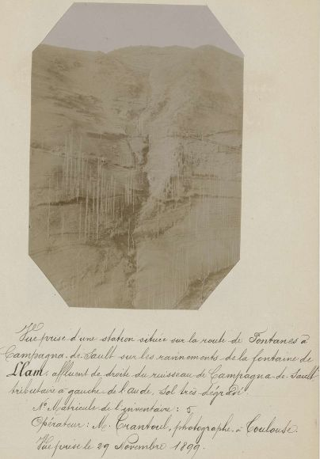
projet de […] de Campagna-de-Sault et de Bessède-de-Sault, torrent de campagne (s.n., 1 ex., s.d.)
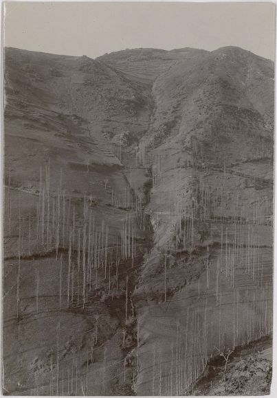
Le Clat
Vue prise d'une station située sur la rive droite de l'Aude dans la forêt domaniale de Gesse, sur les ravinements situés sur la rive gauche de l'Aude au dessous du village du Clat, terrains très dégradés. (TRANTOUL, 3 ex., 1899)

Vue d'ensemble prise d'une station située sur la rive droite de l'Aude dans la forêt domaniale de Gesse au canal du Berger sur les ravinements situés sur la rive gauche de l'Aude, au dessous du village du Clat, terrains très dégradés. (TRANTOUL, 3 ex., 1899)

Belvianes
Ravins des murailles du diable (ROUSSEAU, 1 ex., 1887)
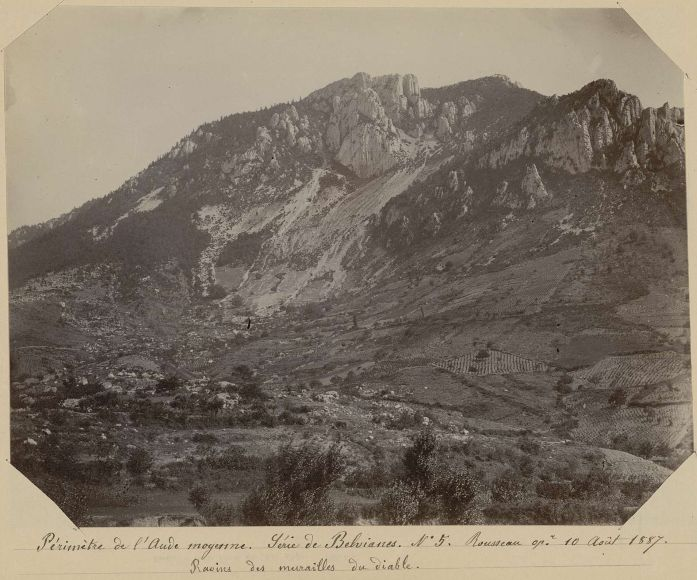
Commentaires
Cliquer ici pour faire un Commentaire
Retour à l'accueil Index complément 3
{kind=link}
{kind=link}
{kind=link}
{kind=link}
{kind=link}
{kind=link}
{kind=link}
{kind=link}
{kind=link}
{kind=link}
{kind=link}
{kind=link}
{kind=link}
{kind=link}
{kind=link}
{kind=link}
![projet de […] de Campagna-de-Sault et de Bessède-de-Sault, torrent de campagne (s.n., 1 ex., s.d.)](https://www.siv.archives-nationales.culture.gouv.fr/mm/media/download/FRAN_0205_9007_L-medium.jpg){kind=link}
{kind=link}
{kind=link}
{kind=link}